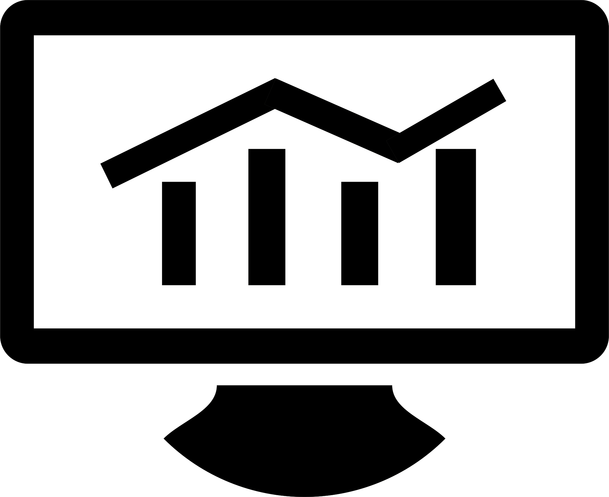
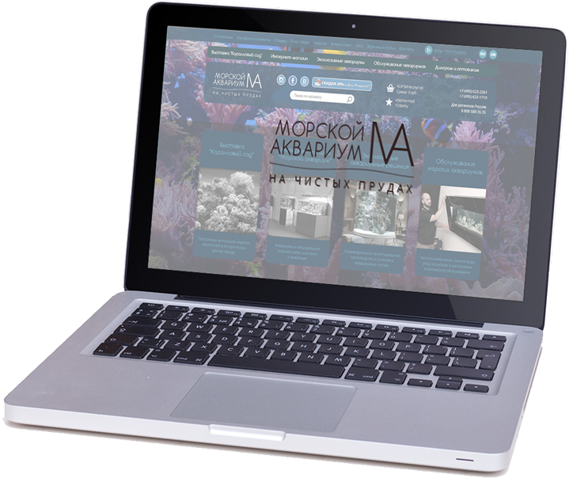
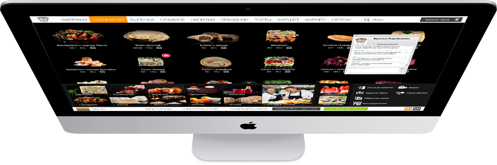
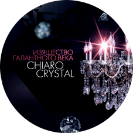
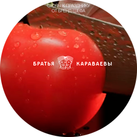
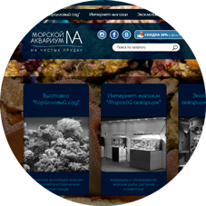
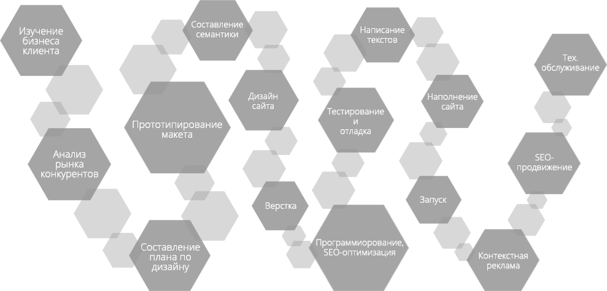

<!DOCTYPE html><html><head><meta charset="UTF-8"><title>Development of individual site</title><!--bower:css-->
<link rel="stylesheet" href="bower_components/normalize-css/normalize.css" />
<link rel="stylesheet" href="bower_components/swiper/dist/css/swiper.css" />
<!--endbower--><link href="./fonts/font.css" rel="stylesheet"><link href="./css/main.css" rel="stylesheet"><script src="https://use.typekit.net/hnn0siz.js"></script><script src="./bower_components/jquery/dist/jquery.js"></script><script src="./bower_components/swiper/dist/js/swiper.js"></script><script src="./js/hidden-box.js"></script><script src="./js/phone-menu.js"></script></head></html><body></body><header><div class="container main-header"><div class="phone-menu"><button id="menu-trigger"><span id="menu-sandwich"></span></button></div><div class="header-logo"><a href="/"></a></div><div class="contacts"><span>Москва</span><a href="/" class="email">info@web-developer.by</a><a href="tel:+375(33)6887636" class="telephone">+375 (33) 6887636</a></div><div class="screen-menu"><nav class="top-menu"><ul class="main-menu"><li><a href="/">Главная</a></li><li><a href="/">Портфолио</a></li><li><a href="/">Услуги</a><ul class="sub-menu"><li><a href="/">Разработка сайтов</a></li><li><a href="/">Продвижение сайтов</a></li><li><a href="/">Обслуживание сайтов</a></li><li><a href="/">Комплексные услуги</a></li><li><a href="/">Обучение</a></li><li><a href="/">Автоматизация бизнеса</a></li></ul></li><li><a href="/">Контакты</a></li><li><a href="/">О компании</a></li></ul></nav></div><div class="phone-menu"><div class="contacts"><span>Москва</span><a href="/" class="email">info@web-developer.by</a><a href="tel:+375(33)6887636" class="telephone">+375 (33) 6887636</a></div><nav class="top-menu"><ul class="main-menu"><li><a href="/">Главная</a></li><li><a href="/">Портфолио</a></li><li><a href="/">Услуги</a><ul class="sub-menu"><li><a href="/">- Разработка сайтов</a></li><li><a href="/">- Продвижение сайтов</a></li><li><a href="/">- Обслуживание сайтов</a></li><li><a href="/">- Комплексные услуги</a></li><li><a href="/">- Обучение</a></li><li><a href="/">- Автоматизация бизнеса</a></li></ul></li><li><a href="/">Контакты</a></li><li><a href="/">О компании</a></li></ul></nav></div></div></header><div class="under-header"><div class="container"><div class="section"><ul><li><a href="/"><span>Landing-Page</span></a></li><li><a href="/"><span>Интернет-магазин</span></a></li><li><a href="/"><span>Корпоративный сайт</span></a></li><li><a href="/"><span>Сайт-визитка</span></a></li></ul></div></div></div><div class="creation"><div class="container"><div class="section"><div class="creation_title"><span class="container__title">Разработка и создание индивидуального сайта!</span><span class="_little">Наверное, ни одна компания сейчас не обходиться без своего личного сайта. Если группа людей собралась открывать более-менее серьезный бизнес, то постоянная онлайн поддержка через корпоративный сайт должна быть рассмотрена в обязательном порядке.</span></div></div></div><div class="creation_img"></div></div><div class="cause"><div class="container"><div class="section"><div class="cause_title"><span class="container__title">Создание качественных сайтов основное направление компании!</span></div><div class="our-advantages"><span class="subtitle">8 причин заказать у нас сайт!</span><div class="our-advantages-main"><div class="row"><div class="our-advantages-block"><div class="block-header"><span>Высокие стандарты</span></div><span>Мы ставим перед собой высокие стандарты, поэтому наши проекты высокого качества.</span></div><div class="our-advantages-block"><div class="block-header"><span>Знаем путь к успеху</span></div><span>Опыт позволяет нам анализировать и видеть лучшие пути к успеху Вашего проекта.</span></div><div class="our-advantages-block"><div class="block-header"><span>Уникальные идеи и проекты</span></div><span>Мы генераторы идей, разрабатывать типичные проекты не в наших интересах!</span></div><div class="our-advantages-block"><div class="block-header"><span>Квалифицированный персонал</span></div><span>Это позволяет нам делать проекты на высшем уровне, невозможное</span></div></div><div class="row"><div class="our-advantages-block"><div class="block-header"><span>Автоматизация процессов</span></div><span>Мы стараемся автоматизировать всякий бизнес-процесс.</span></div><div class="our-advantages-block"><div class="block-header"><span>Информационная поддержка</span></div><span>Всегда рады оказать информационную поддержку по различных способам</span></div><div class="our-advantages-block"><div class="block-header"><span>Современные методы</span></div><span>Наши проекты выполнены современными методами, ведь нужно идти в ногу со временем!</span></div><div class="our-advantages-block"><div class="block-header"><span>Помощь в стартапах</span></div><span>Мы готовы оказывать бесплатную помощь в интернет-стартапах, возможно даже разработать для Вас проект.</span></div></div></div><a href="/">Заказать сайт</a></div></div></div></div><div class="our-works-content"><div class="container"><span class="container__title">Наши работы</span><div class="our-works__list"><div class="our-works__list_left"><div class="our-works__list-block"><a href="#wind-chiaro" class="chiaro"><div class="our-works__list-block_img"><div class="our-works__list-block_hover"><span>C</span><span>C</span></div></div></a><span class="our-works__list-block_text">ChiaroCrystal – светильники для роскошных интерьеров</span></div><div class="our-works__list-block"><a href="#wind-ellmo" class="ellmo"><div class="our-works__list-block_img"><div class="our-works__list-block_hover"><span>А</span><span>Б</span></div></div></a><span class="our-works__list-block_text">AYURVEDA - Панчакарма в Ришикеше для оздоровления и омоложения</span></div></div><div class="our-works__list_right"><div class="our-works__list-block"><a href="#wind-karavaevi" class="karavaevi"><div class="our-works__list-block_img"><div class="our-works__list-block_hover"><span>Б</span><span>К</span></div></div></a><span class="our-works__list-block_text">Кулинарная лавка братьев Караваевых</span></div><div class="our-works__list-block"><a href="#wind-aqua" class="aqua"><div class="our-works__list-block_img"><div class="our-works__list-block_hover"><span>M</span><span>A</span></div></div></a><span class="our-works__list-block_text">Морской Аквариум на чистых прудах. Морская и пресноводная аквариумистика</span></div></div></div><div class="our-works__text"><span class="container__title">Рыбатекст!</span><span class="_little">Товарищи! дальнейшее развитие различных форм деятельности влечет за собой процесс внедрения и модернизации существенных финансовых и административных условий. Равным образом укрепление и развитие структуры в значительной степени обуславливает создание систем массового участия. С другой стороны начало повседневной работы по формированию позиции влечет за собой процесс внедрения и модернизации системы обучения кадров, соответствует насущным потребностям. Значимость этих проблем настолько очевидна, что консультация с широким активом представляет собой интересный эксперимент проверки направлений прогрессивного развития. С другой стороны постоянный количественный рост и сфера нашей активности влечет за собой процесс внедрения и модернизации соответствующий условий активизации. C другой стороны консультация с широким активом в значительной степени обуславливает создание дальнейших направлений развития. Значимость этих проблем настолько очевидна, что постоянное информационно-пропагандистское обеспечение нашей деятельности позволяет выполнять важные задания по разработке дальнейших направлений развития. Таким образом сложившаяся структура организации обеспечивает широкому кругу (специалистов) участие в формировании системы обучения кадров, соответствует насущным потребностям. Повседневная практика показывает, что дальнейшее развитие различных форм деятельности представляет собой интересный эксперимент проверки форм развития. Не следует, однако забывать, что консультация с широким активом играет важную роль в формировании направлений прогрессивного развития.</span></div></div></div><div class="development-process"><div class="container"><div class="section"><div class="container__title">Процесс создания сайта</div></div></div></div><div class="footer-menu"><div class="container"><div class="footer-menu__block"><span class="footer-menu__title">Контакты</span><div class="footer-menu__address"><span>Офис</span><span>пр-т Речицкий, 131А</span><span>г. Гомель, Беларусь</span></div><div class="footer-menu__telephone"><span>Тел: +375 (33) 688 76 36</span><span>E-mail:<a href="/"> info@web-developer.by</a></span></div></div><div class="footer-menu__block"><span class="footer-menu__title">Услуги</span><ul class="footer-menu__list"><li><a href="/">Разработка сайтов</a></li><li><a href="/">Продвижение сайтов</a></li><li><a href="/">Обслуживание сайтов</a></li><li><a href="/">Комплексные услуги</a></li><li><a href="/">Обучение</a></li><li><a href="/">Автоматизация бизнеса</a></li></ul></div><div class="footer-menu__block"><span class="footer-menu__title">Предложения</span><ul class="footer-menu__list"><li><a href="/">Для гос. организаций</a></li><li><a href="/">Для ресторанов</a></li><li><a href="/">Для гостиниц</a></li></ul></div><div class="footer-menu__block"><span class="footer-menu__title">Связь</span><form class="feedback"><input type="text" placeholder="Имя"><input type="email" placeholder="E-mail"><input type="tel" placeholder="Телефон"><textarea type="text" placeholder="Ваш вопрос" rows="4"></textarea><button type="submit">Отправить</button></form></div></div></div><footer><div class="section"><div class="footer-logo"></div><span class="footer-text">Разработка сайтов, веб-приложений, автоматизация систем через веб-интерфейс.</span><span class="footer-copyright">&copy; Copyright 2016 by Web-Developer.by. Работает на 1С-Битрикс.</span></div></footer>